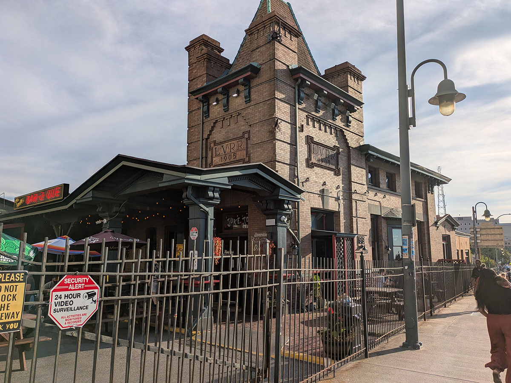
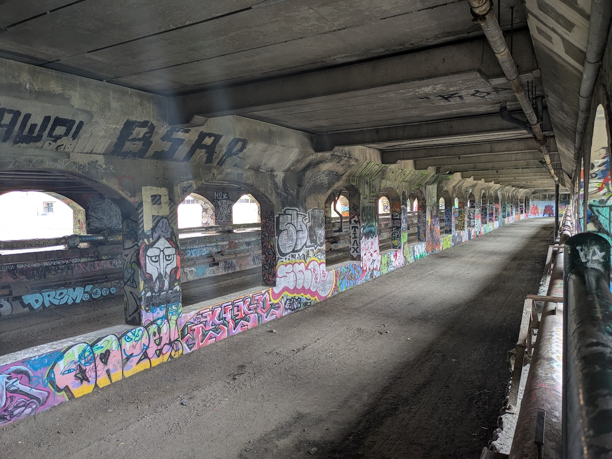
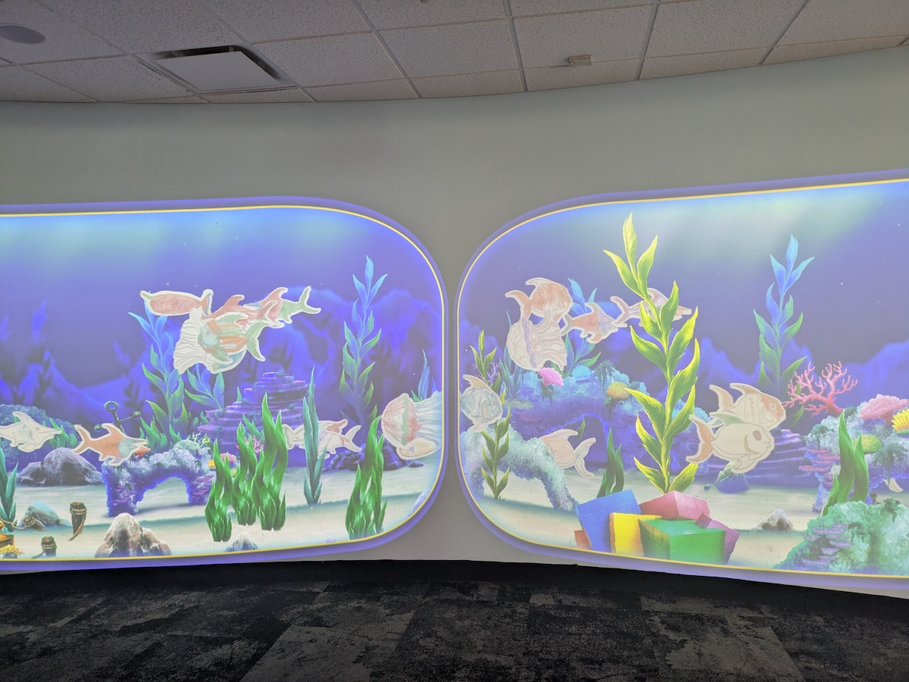
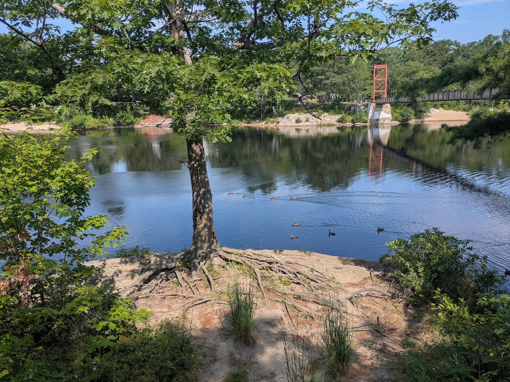
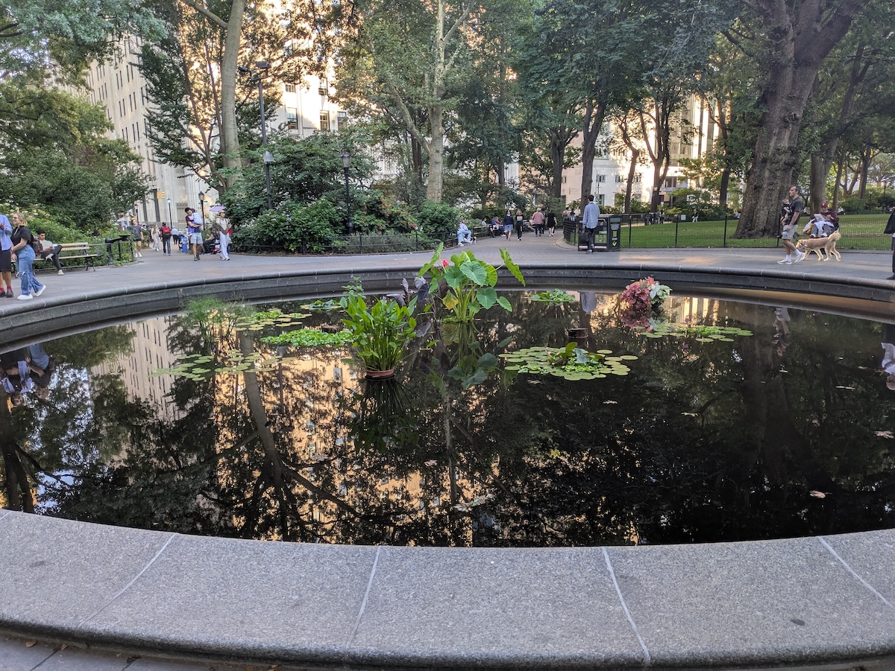

Even before we left Brunswick in May we were determined to come back for the ᖃᓪᓗᓈᖅᑕᐃᑦ ᓯᑯᓯᓛᕐᒥᑦ Printed Textiles from Kinngait Studios exhibit before it closed at the end of October. Separately, we got invited to a friend’s birthday party in Rochester, New York, toward the end of July. Now, Rochester and Brunswick are in opposite directions from each other, but they’re both reachable by rail, and for us that’s enough. Over a period of nine days we took six Amtrak trains (covering 1400 miles), several commuter buses, and innumerable local buses and subways.
We saw textiles, vintage games, and the director’s cut of a Captain America movie (not one with Chris Evans!) Ate Indian food in two different states and BBQ in an old train station. Found a Frank Lloyd Wright tribute in a warehouse. Gave some books away and bought more than enough to replace them. Read on.
Rochester
Our train to Rochester is the 10:20 AM Empire Service, leaving on Friday. That would make for a pretty early morning out of Easton so we head in Thursday evening on Fullington, staying at one of the many Hilton properties in Midtown Manhattan. Dinner was at Patiala Indian Grill on 34th and 9th. It’s small, but fast, and pretty good to boot. I discovered it in 2022 while looking for decent restaurants within a stone’s throw of Penn Station.
Urban renewal hasn’t reached the area around Rochester’s Amtrak station. Things change once you get south of Main Street. After getting off the train we have dinner at Dinosaur Bar-B-Que. They’re a regional chain, with six locations in Upstate New York. They don’t hew to a particular style. One of their trademarks is repurposing old buildings for their restaurants. In this case, it’s the old Lehigh Valley Railroad station, the northern terminus of the Rochester Branch and long abandoned. A friend had recommended this place and I didn’t know about the railroad connection ahead of time. Lovely building and a pretty good meal. For railfans and urban explorers, the long abandoned Rochester Subway tunnel under Broad Street is adjacent to the restaurant.


In the morning, we met a friend for brunch at The Owl House, a vegan-friendly restaurant on the south side of downtown. Afterward, we walked over to the Strong National Museum of Play, which I cannot recommend highly enough. It’s enormous and full of fun and interesting things to see and do. I could have spent hours with the old video games on the second floor. One hands-on-activity on the first floor had you color in a fish (on paper), which would then be scanned and instantly projected with other scanned fish on a wall. Very creative use of technology!

In the evening, we gathered with a group of friends to celebrate a double birthday. We were at the ARTISANWorks, an event space on the east side of Rochester. Imagine an antique mall, the type where many different vendors have their own spaces. Now imagine that there’s also room for a dance floor and dinner. Finally, there’s a block of rooms in the back done up arts-and-crafts style in homage to Frank Lloyd Wright. That’s ARTISANWorks, and it made for a memorable evening.
In the morning, it was time to start heading east toward Brunswick. On the way out we visited Java’s Cafe, where a local wag greeted us a “travelers from a distant land” (we gently corrected him that we weren’t that distant). I should mention that we used the RTS bus network for all but one trip and found that it was clean, fast, and reliable.
Providence
On the way out to Rochester I passed 130,000 lifetime miles on Amtrak. I’ve more mileage on the Chicago-New York/Boston Lake Shore Limited than any other train (26,005 miles), so that felt appropriate. The scenery between Rochester and Albany is pretty and unremarkable. You get some views of the Mohawk River. South of Albany the line follows the Hudson River all the way to New York, and that’s much more interesting.
Our final destination was Providence in Rhode Island. We needed to break the journey somewhere, and Boston’s a little expensive for a simple break-of-journey. Our original plan, to take the Lake Shore Limited to Worcester, fell through after CSX embargoed the line through the Berkshires because of a sinkhole. As a good friend and fellow railfan observed, “that train can’t get a break.” Not wanting to spend hours crossing Massachusetts on a bus, we switched our itinerary to Providence via New York City.
After an uneventful run on a Northeast Regional we reached Providence after the dinner hour. We stayed in the Homewood Suites near the station, and discovered that the primary benefit of doing so was an opportunity to do laundry. We decamped to Layali for a late dinner. Excellent flatbreads and a good vibe all around.
Portland
Providence is 41 miles from Boston as the crow flies. Take you an hour and twenty minutes to drive it via I-95 and I-93. The Acela needs 43 minutes. We took an MBTA Providence/Stoughton line train, which needs 1 hour 11 minutes. The train to Brunswick isn’t until 11:50 AM, and unreserved commuter rail is easier for this kind of short hop.
The connection in Boston is an unusual one. Boston has two principal railway stations: South Station and North Station. There is no direct connection between the two. The Downeaster, which runs from Boston to Brunswick via Portland, is Amtrak’s only train that runs out of North Station. Amtrak through bookings include a “self-transfer” in which you get off at Back Bay and take the Orange Line subway up to North Station.
We get off in Portland to pay a repeat visit to Duckfat, which we’d visited the last time. Got the poutine and milkshake again, and it’s still excellent. From there, an easy ride on the Metro Breeze up to Brunswick.
Brunswick
We stayed at OneSixtyFive again, but for three days instead of two, and in the detached cottage. Excellent experience. The cottage is cozy and well-equipped, though we didn’t do our own cooking this time.
We tried some new restaurants and had a good time everywhere. The breakfast sandwiches were so good at Bohemian Coffee House & Deli we went back a second morning. We did a late dinner and mocktails at the Abbey, then came back for breakfast. We tried the other Indian restaurant in Brunswick, Shere Punjab, where I had an unusually good mango lassi and then mango chicken, a new experience for me. The Marsala Porcini at Pomelia, located in the same building as the train station, was outstanding.
The main event was our return to the Peary–MacMillan Arctic Museum for the textile exhibit. This was everything we’d hoped for and more. Most of pieces were from the 1950s-1960s, though there were also some modern examples of Inuit art. Many were on loan from the West Baffin Cooperative. There’s a good write-up in the Harpswell Anchor with photos from the exhibit. The only thing missing was a catalog of the exhibit, but we ordered one from the Textile Museum of Canada. Incidentally, they’ve been closed since February 2025 and are soliciting donations.
We also returned to Twice-Told Tales Book Store to both donate books and buy books. We will left with more books than we started with, especially after we visited Gulf of Maine Books. The owner’s a real character and we chatted a while.
One morning we did the river walk along the Androscoggin. There’s a path along the Topsham side of the river between Main Street and a swinging bridge. The swinging bridge, refurbished in 2006, takes you back across to Brunswick at Cushing Street. While crossing the the swiging bridge we were treated to a large gathering of ducks, possibly for their 10:30 AM standup. The meeting broke up almost immediately in a flurry of quacking. One sympathises.

Boston
On leaving Brunswick we headed to Boston. Because of various trackwork issues and stops in Portland, this was the first time we made the Brunswick-Boston trip in one go, entirely by train. We stayed at the Porter Square Hotel, which has become something of a standby for us. The rooms are comfortable, it’s near the Red Line, and it’s convenient to our friends in the Boston area.
We met a friend of ours for dinner at Dragon Pizza, an old Somerville standby chiefly notable for getting on Dave Portnoy’s bad side a few years ago. In this as in many things, our experience did not match his. Go there. The slices are generous, and don’t skip the garlic knots.
In the morning we wandered around with time to kill before the 1:05 PM Acela back to New York. We had coffee at the Cafe Zing, located in a former bookstore in the Porter Square shopping center. There we split up. Liz took a bus up to Play Time, a craft store in Arlington. They’ve got everything, including her favorite fabric dye. On our last visit I got a bunch of Woodland Scenics supplies. I went down to the Brattle, my favorite bookstore in Boston, and then up to WardMaps for an MBTA tote bag.
The only real travel hiccup occurred leaving Boston. A brushfire damaged trackside communications between Back Bay and Route 128, leading to single tracking and cascading delays. We left Providence 40 minutes late on what it supposed to be a 43-minute trip. Ah well. Lovely day outside, and we made some of it up by the time we reached New York.
New York, New York
I never book bus tickets back from New York in advance. Trans-Bridge Lines is all-reserved now, and I don’t like to commit to a particular return. Part of that is protecting myself against a late Amtrak arrival, but also the knowledge that I might want to stay over in New York for one reason or another.
That reason arrived in the form of the Friday night screening of the “director’s cut” of Albert Pyun’s Captain America at the Asian American Film Festival. Menahem Golan produced this shortly after leaving Cannon Films. It was released in 1990 and starred Matt Salinger in the lead role. It’s famously bad, and never got a theatrical release stateside. Golan chopped it up for the release, and Pyun lugged around film cans containing his preferred version up until his death.
First, we had some time to kill, and after dinner we made our way on foot down to the Regal at Union Square. We love taking the subway but it was a nice night out and Manhattan’s a very walkable city. We wandered down Fifth Avenue–new territory for us–past the Empire State Building, and parked at Madison Square Park for a while. It’s a pleasant space, extending from 26th to 23rd, and from Fifth to Fourth. There’s a lily pond on the north side and a fountain on the south side. Couple dog parks. There’s a temporary installation by Lily Kwong called Gardens Of Renewal that diverted us for a few minutes.

I may write a full review of Captain America in the future. The cut we saw at the Regal has some flaws but it’s an impressive effort and doesn’t deserve all the opprobrium heaped (perhaps rightly) on the theatrical cut. Hopefully the restoration work continues and a proper release takes place.
After that, we were done. Back to the hotel, and home on Trans-Bridge Lines the next morning. 1,406 miles on Amtrak. Two commuter trains in the Boston area. The New York City Subway. Local and regional buses in the Lehigh Valley, Rochester, Boston, and Greater Portland. Only took two cabs, one in Rochester and one in Boston. Hung out with a lot of cool people, relaxed, ate good food, bought books, read books, saw Captain America as Albert Pyun intended it. Good trip all around.